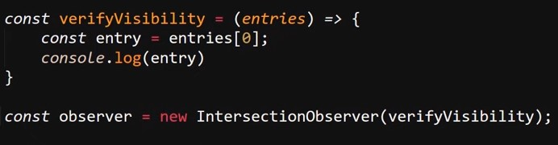

La función de esta api es simple, esta detecta si un elementos HTML se encuetra dentro del viewport del navegador o no, en otras palabras esta api detecta si el elemento HTML en cuestión se encuetra enfocado dentro de la pantalla del navegador.
Esta api trabaja atravez del objeto "IntersectionObserver", el cual se declara como un objeto común.
Ejemplo
Una caracteristica del objeto "IntersectionObserver" radica en que este debe recibir de forma obligatoria un dato, el cual hace referencia a una función que defina que acción se tomara cuando el elemento entre en el viewport.
Ejemplo

En este ejmeplo el dato "verifyVisibility" hace referencia a una función flecha a la cual se le asigna el dato "entries"(entradas), este dato puede ser nombrado como se plaza, pero lo que si es de caracter obligatorio es definir un dato en esta función flecha, ya que en este se asignara un array el cual contedra el listado de todos los elementos html a los que se les defina el seguimiento con la api.
Por lo tanto una ejecución muy simple de la api estaria conformada de la siguite forma:
Ejemplo
En este ejemplo se obtiene el elemento HTML en cuestión (caja3), se declara la variable "verifyVisibility", la cual contiene la función flecha que a su vez recibe el dato "entries", en este caso la función define la el dato entries como un array, y define la variable "entry" para obtener el primer dato de este (lugar en el que se almacenara el primer elemeto a hacer seguimiento), luego se inicializa el objeto "IntersectionObserver" en la variable "observer" y se le asigna la función flecha, por ultimo se asigna el objeto para que haga seguimiento del elemento HTML
En otras palabras se obtiene el elemeto HTML al que se le hara seguimiento, se declara la función flecha la cual obtiene un dato, lo almacena en un array y obtiene el primer dato para imprimirlo en pantalla, luego se se inicializa la api con "IntersectionObserver" y se le pasa la función flecha, de ese modo se envia el elemeto HTML a la función, de ese modo cuando dicho elemento entre en el viewport se ejecuta el codigo de la función flecha
Por otra parte se puede hacer retornar un valor boolean que indique el si un elemento se encuentra en patalla o no, esto se logra con el metodo ".isIntersecting", de este modo el metodo retornara "false" en caso de que el elemeto no se encuetre en pantalla y retornara "true" en caso de que si lo este.
Ejemplo
De este modo con esa pequeña modificación el ejemplo anterior pasa de imprimir el "Intersection" para en su logar retornar "true" o "false" segun si el elemento se encuetra en el viewport o no.
Options
Se traa de un segundo parametro que puede ser definido en el objeto "IntersectionObserver", se trata de un dato que contiene un objeto en el cual se definie ciertas pautas para la ejecución del evento, principalmete estas pautas consisten en definir si el evento se ejecutara antes o despues de lo defenido por defecto.
Es decir se puede usar "options" para definir que el evento ocuarra 50px antes de que el elemento se muestro o por otros lado este no ocuarra hasta que la mitad del elemento se encuetra dentro del viewport.
Lazy Load
Se trata de un ejemplo de uso de la api "intersectionObserver", el cual consiste en desarrollar un sistema de carga para definir cuantos o cuales elementos cargar a la vez, este tipo de sistema es empleado en redes sociales como Facebook o Instagram, ya que este tipo de redes sociales esta estructurada como un muro en el cual se van cargando publicaciones segun el usuario se deplaza por la paguina.
En otras palabras esta redes sociales se basan en el desplazamiento de los usuarios por el viewport para definir cuando cargar más elemetos en vez de cargarlos todos a la vez.